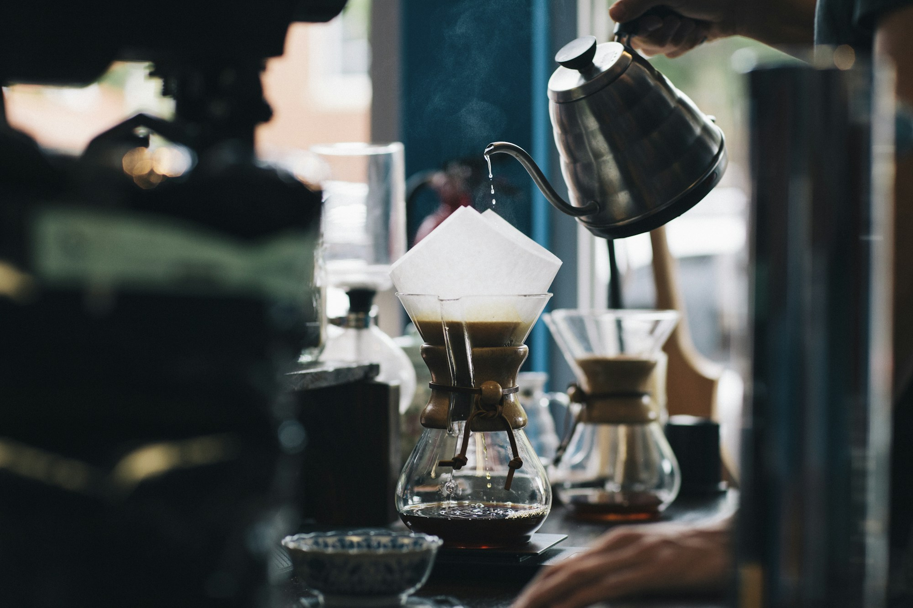
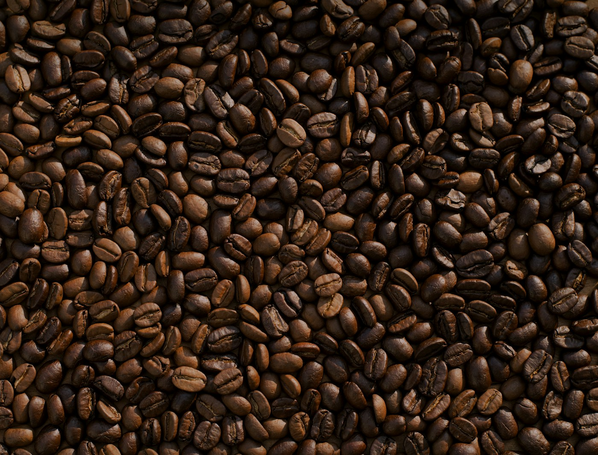
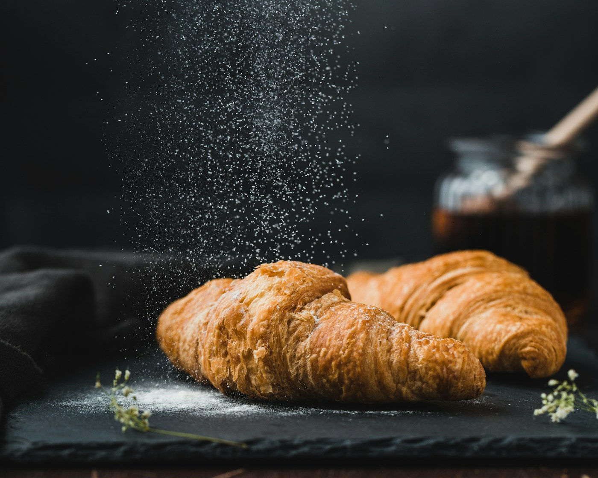
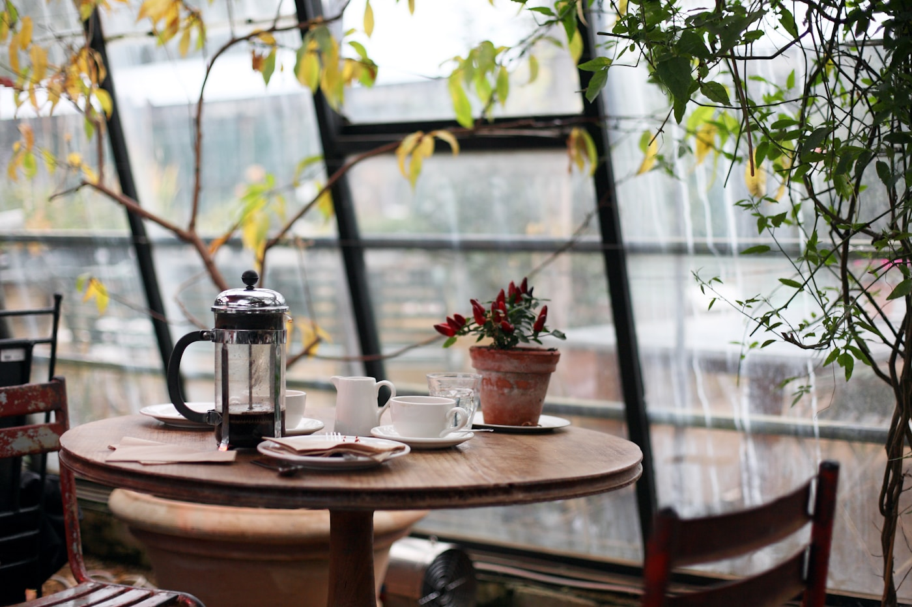

GOOD MORNINGS. SIMPLE PLEASURES.
パンが焼ける朝、
珈琲の香る場所。
A little pause, a lovely day.
Good bread.
Good coffee.
Good day.
何気ない一日を、ちょっと豊かに。
いつもの朝に、
小さなよろこびを。
扉を開けると、ふわりと届くパンの香り。
豆を挽く音と、カップから立ちのぼる湯気。
そんな何気ない風景が、私たちの毎日のはじまりです。
産地の個性が息づく一杯と、
素材のおいしさをまっすぐに伝えるパン。
手をかけ、時間をかけ、今日も丁寧につくります。
忙しい朝も、のんびりしたい午後も。
MORIが、あなたの日常の小さな余白になりますように。

01 — FROM BEAN TO CUPOUR CRAFT / 01
Coffee.
一杯に、豆のものがたり。
果実のような香り、やさしい甘み、心地よい余韻。
豆が育った土地の個性を引き出す焙煎と、
一杯ずつ向き合うハンドドリップ。
その日の気分に合う一杯を、ご一緒に。

02 — FLOUR, BUTTER & A LITTLE PATIENCEOUR CRAFT / 02
Bakery.
今日のパンは、今日の手で。
国産小麦の豊かな風味と、発酵バターの香り。
じっくり寝かせた生地を、毎朝お店で焼き上げます。
外はさっくり、中はしっとり。
まずはひと口、そのままでどうぞ。
A TASTE OF THE SEASON
秋を、
ひとくち。
Slow mornings,
golden moments.
秋のカンパーニュプレート
香ばしくトーストしたカンパーニュに、
きのこのソテーと季節のスープを添えて。
深煎りのコーヒーと楽しむ、秋だけの朝時間。
¥1,280 ドリンクセット ¥1,680 / 税込
9–11月限定 · 9:00–14:00
写真は使用するパンのイメージです。
03 / OUR SPACE
Make yourself at home.
ひとりの時間も、誰かとの時間も。
思い思いの過ごし方で。

木のぬくもり。窓から差し込む光。
街の中で、深呼吸できる場所。
See you
at MORI.
いつもの道に、少し寄り道。
MORI COFFEE & BAKERY
モリ コーヒー & ベーカリー
- ADDRESS
- 東京都 緑町 森の小径 1-2-3
緑町駅から徒歩5分（架空の所在地） - OPEN
- 8:00 – 18:00 （L.O. 17:30）
ベーカリー 8:00〜 / 季節のプレート 9:00〜 - CLOSED
- 水曜日
- INFORMATION
- 全席禁煙 / テイクアウト可
お席のご予約は承っておりません。
このサイトは架空の店舗を題材にしたポートフォリオ作品です。
実際の店舗・所在地・営業時間ではありません。
LITTLE MOMENTS FROM MORI
Our daily journal.
焼きたての便りと、季節の風景を。